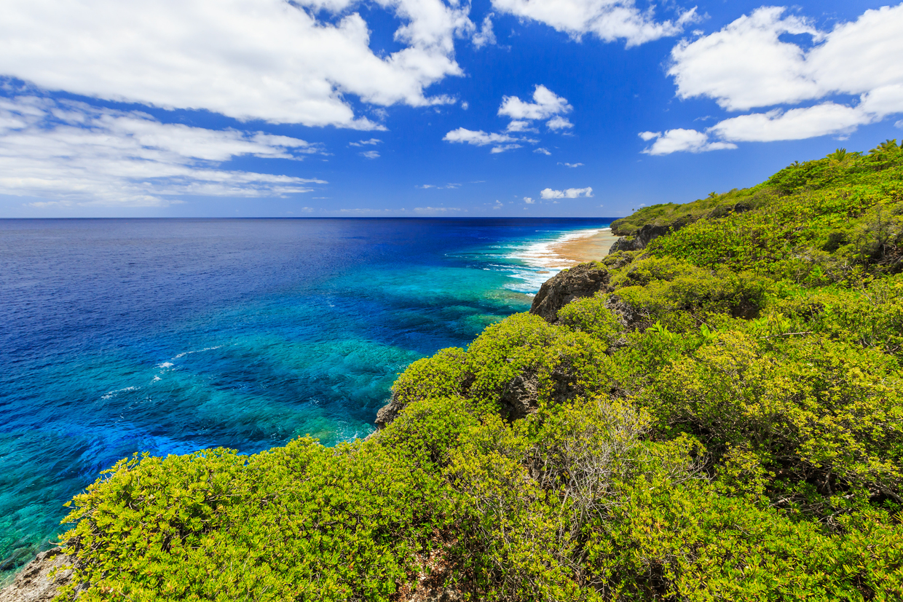
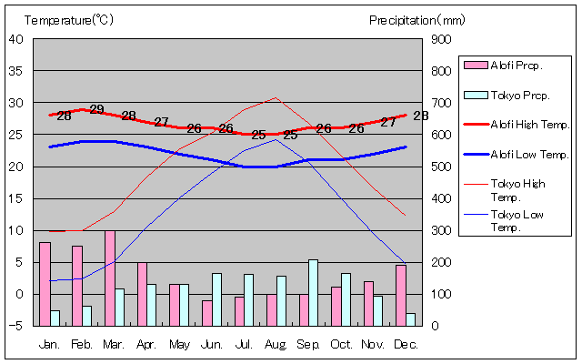
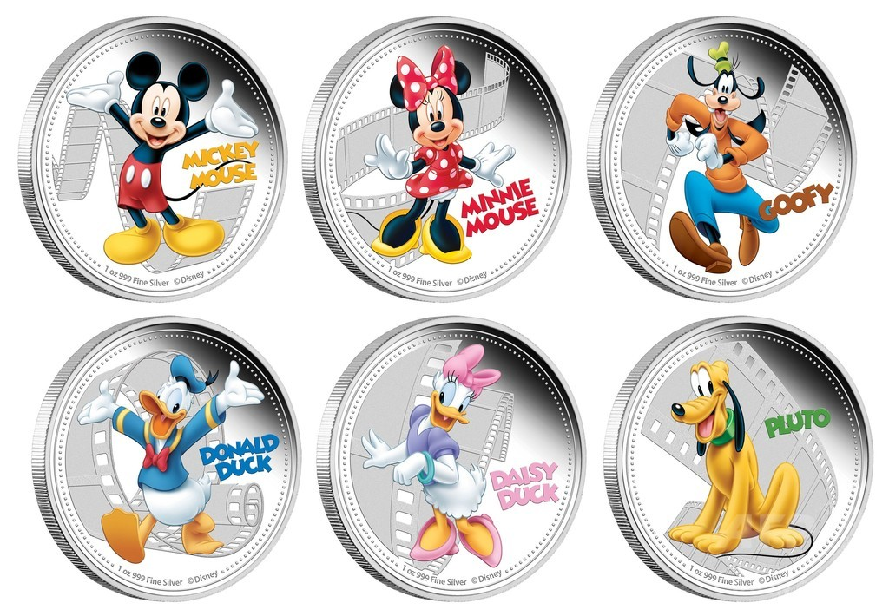
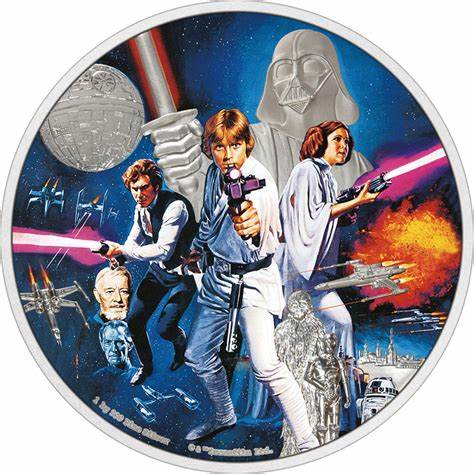

オセアニア東部にある立ニュージーランドの北東、トンガの東、サモアの南東に位置するニウエ島を領土とする島国。 また世界で２番目に小さい国と言われています。
気候は熱帯に分類されていて、南東貿易風の影響を受けています。 ニウエ語を話すが、国民教育は英語で行われ、 宗教もほぼキリスト教の為、 伝統文化は希薄になってきています。
下の写真のように海がとてもきれいです。美しい海では、ダイビングや釣りなどのマリンアクティビティを楽しめ、手付かずの自然の森の中をウォーキングなどで散策するのもおすすめだそうです。

ニウエは、ニュージーランドと同じく、イギリスのエリザベス女王を首相としています。 また、小さな新しい国であるニウエを、世界中の人に知ってもらおうというプロモーションの一環で、ディズニーとのタイアップ通貨や、スターウォーズとのコラボ通貨が作られました。
 世界最大のサンゴ礁でできた楕円形の島といわれており、豊橋市とほぼ一緒ぐらいの面積です。 また、ニウエには有名な観光地はほとんどありません。しかし、最近は手つかずの自然が多く残っていることを活かし、ダイビングやホーエルウォッチング、森林浴などのツアーが開催され、観光業にも力を入れています。

９．産業と技術革新の基盤を作ろう
ニウエは、食料、栄養、生活の安全のために陸と海の資源に大きく依存しています。そこで、持続可能な海洋経済のための統合海洋管理などについて活動しています。